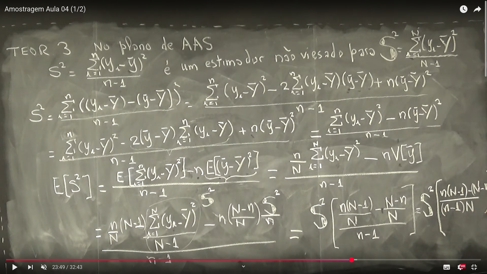
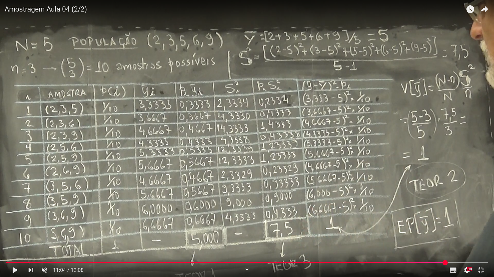
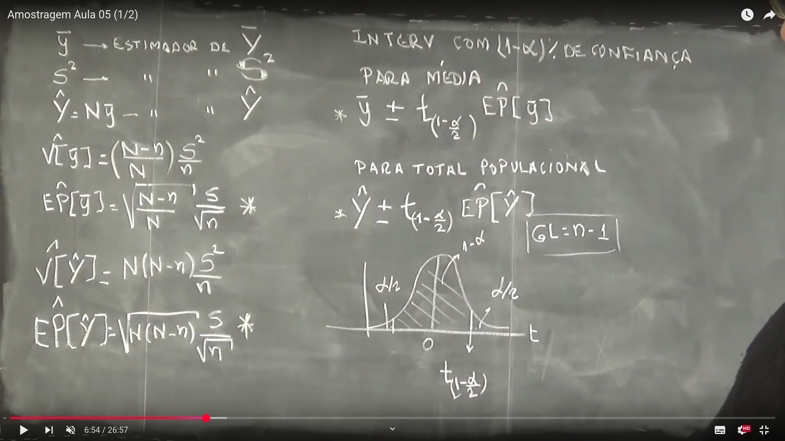
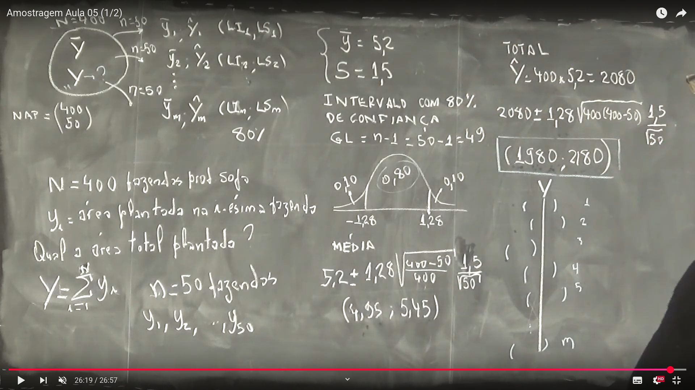

Semana 4
Semana 4
Aula 01 - Estimador Não Viesado para a Variância Populacional
Nesta aula, vamos demonstrar que o estimador da variância amostral $S^2$ é não viesado para a variância populacional, usando o Teorema 3 no contexto da Amostragem Aleatória Simples (AAS).
Teorema 3
O estimador da variância amostral é dado por:
\[ S^2 = \frac{1}{n - 1} \sum_{i=1}^{n} (y_i - \bar{y})^2 \]
Queremos mostrar que esse estimador é não viesado para a variância populacional:
\[ S^2 = \frac{1}{N - 1} \sum_{i=1}^{N} (y_i - \bar{Y})^2 \]
Ou seja:
\[ \mathbb{E}[S^2] = \frac{1}{N - 1} \sum_{i=1}^{N} (y_i - \bar{Y})^2 \]
Prova do Teorema 3
Partimos da definição do estimador da variância amostral:
\[ S^2 = \frac{1}{n - 1} \sum_{i=1}^{n} (y_i - \bar{y})^2 \]
Expandimos utilizando a identidade algébrica:
\[ (y_i - \bar{y})^2 = \left[ (y_i - \bar{Y}) - (\bar{y} - \bar{Y}) \right]^2 \]
Substituindo na fórmula:
\[ S^2 = \frac{1}{n - 1} \sum_{i=1}^{n} \left( (y_i - \bar{Y})^2 - 2(y_i - \bar{Y})(\bar{y} - \bar{Y}) + (\bar{y} - \bar{Y})^2 \right) \]
Separando os termos:
\[ S^2 = \frac{1}{n - 1} \left[ \sum_{i=1}^{n} (y_i - \bar{Y})^2 - 2 (\bar{y} - \bar{Y}) \sum_{i=1}^{n} (y_i - \bar{Y}) + n (\bar{y} - \bar{Y})^2 \right] \]
Como:
\[ \sum_{i=1}^{n} (y_i - \bar{Y}) = n(\bar{y} - \bar{Y}) \]
Temos:
\[ S^2 = \frac{1}{n - 1} \left[ \sum_{i=1}^{n} (y_i - \bar{Y})^2 - n (\bar{y} - \bar{Y})^2 \right] \]
Valor Esperado de $S^2$
Aplicamos o valor esperado:
\[ \mathbb{E}[S^2] = \frac{1}{n - 1} \left[ \mathbb{E} \left( \sum_{i=1}^{n} (y_i - \bar{Y})^2 \right) - n \cdot \mathbb{E} \left( (\bar{y} - \bar{Y})^2 \right) \right] \]
Primeiro termo:
\[ \mathbb{E} \left( \sum_{i=1}^{n} (y_i - \bar{Y})^2 \right) = \frac{n}{N} \sum_{i=1}^{N} (y_i - \bar{Y})^2 = \frac{n}{N} (N - 1) S^2 \]
Segundo termo:
Sabemos que:
\[ \mathbb{E} \left( (\bar{y} - \bar{Y})^2 \right) = \operatorname{Var}(\bar{y}) = \left( \frac{N - n}{N} \right) \frac{S^2}{n} \]
Multiplicando por $n$:
\[ n \cdot \mathbb{E} \left( (\bar{y} - \bar{Y})^2 \right) = \left( \frac{N - n}{N} \right) S^2 \]
Substituindo na fórmula de \(\mathbb{E}[S^2]\)
\[ \mathbb{E}[S^2] = \frac{1}{n - 1} \left[ \frac{n}{N}(N - 1) S^2 - \left( \frac{N - n}{N} \right) S^2 \right] \]
Colocando $S^2$ em evidência:
\[ \mathbb{E}[S^2] = \frac{S^2}{n - 1} \cdot \left[ \frac{n(N - 1) - (N - n)}{N} \right] \]
Resolvendo o numerador:
\[ n(N - 1) - (N - n) = nN - n - N + n = nN - N = N(n - 1) \]
Logo:
\[ \mathbb{E}[S^2] = \frac{S^2}{n - 1} \cdot \frac{N(n - 1)}{N(n - 1)} = S^2 \]
Conclusão
O estimador
\[ S^2 = \frac{1}{n - 1} \sum_{i=1}^{n} (y_i - \bar{y})^2 \]
é não viesado para a variância populacional:
\[ S^2 = \frac{1}{N - 1} \sum_{i=1}^{N} (y_i - \bar{Y})^2 \]
ou seja:
\[ \mathbb{E}[S^2] = S^2 \]
Corolário: Estimador da variância da média amostral
Sabemos pelo Teorema 2 que:
\[ \text{Var}(\bar{y}) = \left( \frac{N - n}{N} \right) \frac{S^2}{n} \]
Como $S^2$ é não viesado, podemos substituí-lo:
\[ \widehat{\text{Var}}(\bar{y}) = \left( \frac{N - n}{N} \right) \frac{S^2}{n} \]
Este é um estimador não viesado de $({y})$:
\[ \mathbb{E}\left[ \widehat{\text{Var}}(\bar{y}) \right] = \left( \frac{N - n}{N} \right) \frac{\mathbb{E}[S^2]}{n} = \text{Var}(\bar{y}) \]
Representação Ilustrativa: 


Aula 02 - Aplicação dos Teoremas 2 e 3
Nesta aula, aplicamos os Teoremas 2 e 3 da Amostragem Aleatória Simples (AAS) a um exemplo prático. O objetivo é verificar numericamente que:
- A média amostral é um estimador não viesado da média populacional.
- A variância amostral corrigida também é um estimador não viesado da variância populacional.
Exemplo de População Finita
Seja uma população finita de tamanho:
\[ N = 5 \quad \text{com valores: } \{2, 3, 5, 6, 9\} \]
A média populacional é:
\[ \bar{Y} = \frac{2 + 3 + 5 + 6 + 9}{5} = 5 \]
A variância populacional é:
\[ S^2 = \frac{(2 - 5)^2 + (3 - 5)^2 + (5 - 5)^2 + (6 - 5)^2 + (9 - 5)^2}{5 - 1} = \frac{9 + 4 + 0 + 1 + 16}{4} = \frac{30}{4} = 7{,}5 \]
Amostragem Aleatória Simples Sem Reposição
Seja o tamanho da amostra:
\[ n = 3 \]
Número total de amostras possíveis (sem reposição):
\[ \binom{5}{3} = 10 \]
Cada uma dessas amostras tem a mesma probabilidade \(p(i) = \frac{1}{10}\).
Tabela de Amostras
| \(i\) | Amostra | \(p(i)\) | \(\bar{y}_i\) | \(p(i)\bar{y}_i\) | \(S_i^2\) | \(p(i)S_i^2\) | \((\bar{y}_i - \bar{Y})^2 \cdot p(i)\) |
|---|---|---|---|---|---|---|---|
| 1 | (2,3,5) | \(1/10\) | \(3.3333\) | \(0.3333\) | \(2.3334\) | \(0.23334\) | \((3.3333 - 5)^2 \cdot \frac{1}{10}\) |
| 2 | (2,3,6) | \(1/10\) | \(3.6667\) | \(0.36667\) | \(4.3330\) | \(0.4333\) | \((3.6667 - 5)^2 \cdot \frac{1}{10}\) |
| 3 | (2,3,9) | \(1/10\) | \(4.6667\) | \(0.46667\) | \(14.3333\) | \(1.4333\) | \((4.6667 - 5)^2 \cdot \frac{1}{10}\) |
| 4 | (2,5,6) | \(1/10\) | \(4.3333\) | \(0.43333\) | \(4.3333\) | \(0.4333\) | \((4.3333 - 5)^2 \cdot \frac{1}{10}\) |
| 5 | (2,5,9) | \(1/10\) | \(5.3333\) | \(0.53333\) | \(12.3333\) | \(1.2333\) | \((5.3333 - 5)^2 \cdot \frac{1}{10}\) |
| 6 | (2,6,9) | \(1/10\) | \(5.6667\) | \(0.56667\) | \(12.3333\) | \(1.2333\) | \((5.6667 - 5)^2 \cdot \frac{1}{10}\) |
| 7 | (3,5,6) | \(1/10\) | \(4.6667\) | \(0.46667\) | \(2.3333\) | \(0.2333\) | \((4.6667 - 5)^2 \cdot \frac{1}{10}\) |
| 8 | (3,5,9) | \(1/10\) | \(5.6667\) | \(0.56667\) | \(9.0000\) | \(0.9000\) | \((5.6667 - 5)^2 \cdot \frac{1}{10}\) |
| 9 | (3,6,9) | \(1/10\) | \(6.0000\) | \(0.60000\) | \(4.3333\) | \(0.4333\) | \((6.0000 - 5)^2 \cdot \frac{1}{10}\) |
| 10 | (5,6,9) | \(1/10\) | \(6.6667\) | \(0.66667\) | \(6.0000\) | \(0.6000\) | \((6.6667 - 5)^2 \cdot \frac{1}{10}\) |
| TOTAL | \(\mathbf{1}\) | \(\mathbf{5.000}\) | — | \(\mathbf{7.5}\) | \(\mathbf{1.000}\) |
Aplicando o Teorema 2
O Teorema 2 afirma que:
\[ \operatorname{Var}[\bar{y}] = \left( \frac{N - n}{N} \right) \cdot \frac{S^2}{n} \]
Substituindo:
\[ \operatorname{Var}[\bar{y}] = \left( \frac{5 - 3}{5} \right) \cdot \frac{7.5}{3} = \frac{2}{5} \cdot \frac{7.5}{3} = \frac{15}{15} = 1 \]
A variância teórica da média amostral é:
\[ \mathbb{E}\left[ (\bar{y} - \bar{Y})^2 \right] = 1 \]
Confirma o Teorema 2.
Aplicando o Teorema 3
O Teorema 3 afirma que:
\[ \mathbb{E}[S^2] = S^2 \]
Somando os valores de \(p(i) \cdot S_i^2\):
\[ \sum_{i=1}^{10} p(i) \cdot S_i^2 = 7.5 \]
Confirma o Teorema 3.
Conclusão
A média dos valores \(\bar{y}_i\) ponderada por \(p(i)\) é:
\[ \sum_{i=1}^{10} p(i) \cdot \bar{y}_i = 5 = \bar{Y} \]
A esperança dos estimadores \(S^2\) também coincide com a variância populacional:
\[ \sum_{i=1}^{10} p(i) \cdot S_i^2 = S^2 = 7.5 \]
Portanto:
A média amostral \(\bar{y}\) é um estimador não viesado de \(\bar{Y}\).
A variância amostral \(S^2\) é um estimador não viesado de \(S^2\).
Representação Ilustrativa: 
Aula 03 - Estimadores e Intervalos de Confiança
Nesta aula, estudamos os estimadores e a construção de intervalos de confiança (ICs) para a média e o total populacional, utilizando os resultados dos Teoremas 2 e 3.
Estimadores
Média amostral: \[ \bar{y} = \text{estimador de } \bar{Y} \]
Variância amostral: \[ s^2 = \text{estimador de } S^2 \]
Total populacional: \[ \hat{Y} = N \bar{y} \]
Variância dos Estimadores
A variância da média amostral (Teorema 2): \[ \hat{V}[\bar{y}] = \left( \frac{N - n}{N} \right) \frac{s^2}{n} \]
Erro padrão da média amostral: \[ EP[\bar{y}] = \sqrt{ \left( \frac{N - n}{N} \right)} \frac{s^2}{\sqrt{n}} \]
Para o total populacional \(\hat{Y} = N\bar{y}\):
Variância: \[ \hat{V}[\hat{Y}] = N \left( {N - n} \right) \frac{s^2}{n} \]
Erro padrão: \[ EP[\hat{Y}] = \sqrt{ N \left( {N - n} \right) } \frac{s}{\sqrt{n}} = N \cdot EP[\bar{y}] \]
Intervalo de Confiança \((1 - \alpha)\%\)
Para a média populacional \(\bar{Y}\):
\[ \bar{y} \pm t_{(1 - \frac{\alpha}{2})} \cdot EP[\bar{y}] \]
Para o total populacional \(Y\):
\[ \hat{Y} \pm t_{(1 - \frac{\alpha}{2})} \cdot EP[\hat{Y}] \]
Com graus de liberdade:
\[
GL = n - 1
\]
Exemplo: Estimativa de Área Plantada
População de tamanho \(N = 400\) (fazendas), amostra de tamanho \(n = 50\).
Média amostral observada: \[ \bar{y} = 52 \]
Desvio padrão amostral: \[ s = 15 \]
Objetivo: Estimar a área total plantada.
Estimativa do Total:
\[ \hat{Y} = N \bar{y} = 400 \times 52 = 2080 \]
Intervalo de Confiança de 80%:
Usamos \(t_{(1 - \alpha/2)} = 1.28\) (tabela t de Student com \(GL = 49\) e 80% de confiança).
Erro padrão: \[ EP[\hat{Y}] = \sqrt{ \frac{400(400 - 50)}{400} } \cdot \frac{15}{\sqrt{50}} \approx 128 \]
Intervalo de confiança: \[ 2080 \pm 128 \Rightarrow (1952, 2208) \]
Na imagem, os valores arredondados são:
\[ (1980,\ 2180) \]
Interpretação do Intervalo de Confiança
O intervalo de confiança não significa que existe uma probabilidade de 80% de que o total populacional esteja dentro do intervalo.
Correção: Se repetíssemos esse processo várias vezes (tirando amostras aleatórias e construindo intervalos), 80% dos intervalos construídos conteriam o verdadeiro valor do total populacional \(Y\).
Sobre o uso do \(t\) de Student
O valor crítico \(t_{(1 - \frac{\alpha}{2})}\) vem da distribuição \(t\) de Student, que é usada em vez da distribuição normal padrão quando o tamanho da amostra é pequeno e a variância populacional \(S^2\) é desconhecida, sendo estimada por \(s^2\) (variância da amostra).
A distribuição \(t\) depende de um parâmetro chamado graus de liberdade (GL), que para a média amostral é:
\[ GL = n - 1 \]
Como usar o valor de \(t\)
Para construir um intervalo de confiança \((1 - \alpha)\%\), você precisa:
Escolher o nível de confiança, por exemplo:
- 90% → \(\alpha = 0{,}10\)
- 95% → \(\alpha = 0{,}05\)
- 99% → \(\alpha = 0{,}01\)
Calcular os graus de liberdade: \[ GL = n - 1 \]
Consultar o valor de \(t_{(1 - \frac{\alpha}{2})}\) em uma tabela da distribuição \(t\) para o GL correspondente.
Exemplos de valores de \(t\)
| Nível de Confiança | \(\alpha\) | \(t_{(1 - \frac{\alpha}{2})}\) (com \(GL = 49\)) |
|---|---|---|
| 80% | 0,20 | 1,28 |
| 90% | 0,10 | 1,68 |
| 95% | 0,05 | 2,01 |
| 99% | 0,01 | 2,68 |
Estes valores mudam com o tamanho da amostra. Para cada novo \(n\), calcule \(GL = n - 1\) e consulte a tabela correspondente.
Por que usamos o \(t\) e não o \(z\)?
- Quando a variância populacional é conhecida, usamos a distribuição normal padrão (\(z\)).
- Quando a variância populacional é desconhecida, usamos o estimador amostral \(s^2\). Nesse caso, o erro padrão envolve mais incerteza, e por isso usamos a distribuição \(t\) de Student, que corrige essa incerteza para amostras pequenas.
Quadro da aula:
Parte 1: 
Parte 2: 